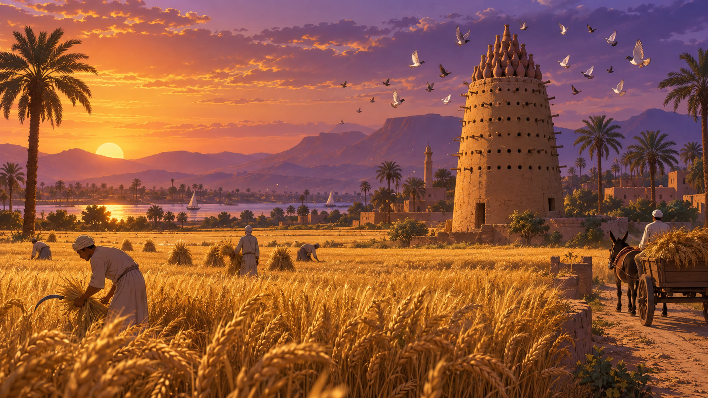

من قلب الجرايد والترع
الريف
جولة بصرية هادية في الريف المصري وقت الغروب: نيل صغير، نخيل باسق، وفلاح واقف على الضفة يشوف يومه وهو بيخلص.
ابدأ الرحلةمن قلب الجرايد والترع
جولة بصرية هادية في الريف المصري وقت الغروب: نيل صغير، نخيل باسق، وفلاح واقف على الضفة يشوف يومه وهو بيخلص.
ابدأ الرحلةعلى ضفاف الترعة
قبل المغرب بدقيقة، الترعة بتاخد لون السما. الجاموسة واقفة في المية تبرّد، وطيور أبو قردان بتعدّي على ضهرها زي كل يوم.
كمّل للحصاد ←
دهب الأرض
في موسم القمح الشغل بيبدأ مع الفجر: منجل، وحزمة سنابل على الكتف، وحمام البرج بيلف فوق الحقول مستني بقايا الحصيد.
الختام ←كل اللي شوفته تخيّل فني بيحتفي بالريف المصري، مش توثيق لمكان بعينه.